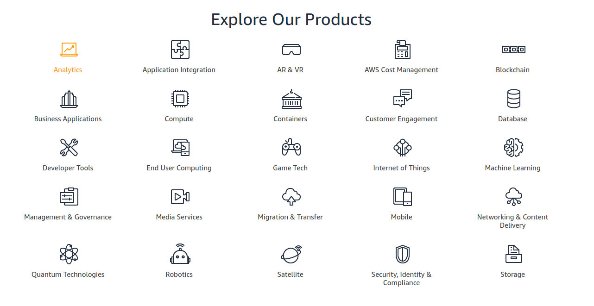
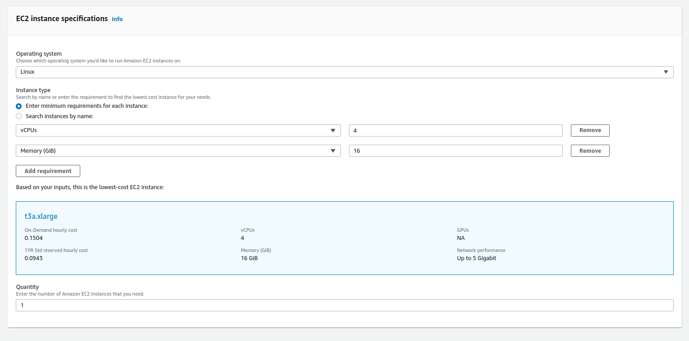

Deta
Deta is building the Micro Cloud ☁️🤏



Then you learned how to use functions, then libraries and frameworks 🔧
Then you decide to make a website and then...

From Servers to Databases to Caching, to CDNs to Load balancers, etc. 🤔

To bring simplicity & the joy of coding back to web.
- Production grade NoSQL Databases
- Easy to read and write from
Deta Micros
- Super fast deployment for your Node.js and Python apps
- Free subdomain, SSL certification
 Using Deta is Reliable
Using Deta is Reliable 💁🏻♀️ You probably won't need Big Cloud anyway
 Hackathons and Learning
Hackathons and Learning
Side projects
 Small Apps and APIs
Small Apps and APIs
Deta Auth